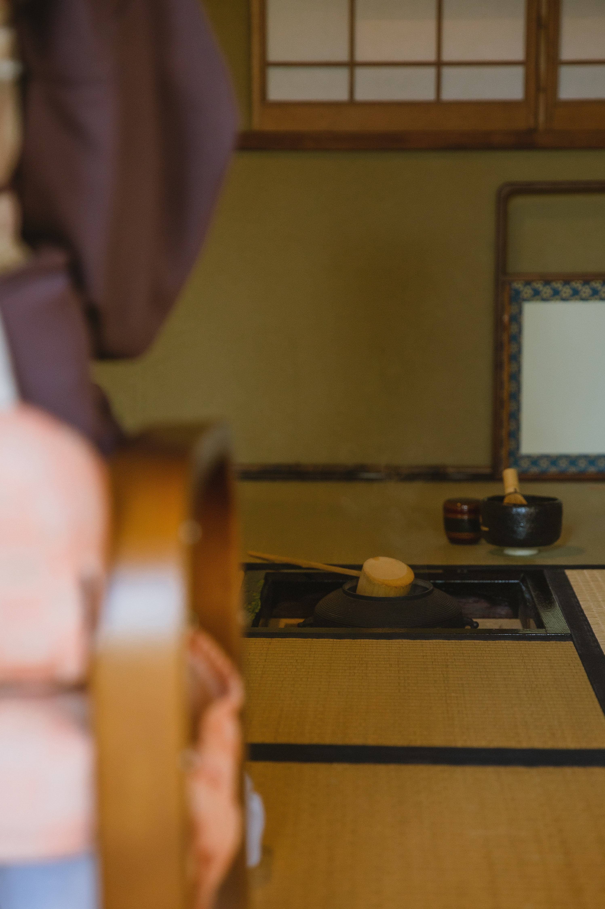

The history of green tea in China goes back to 8th century and the method of making powdered tea from steam-prepared dried tea leaves, became popular in 12th century. That is when matcha was discovered by a Buddhist monk, Myoan Eisai, and brought to Japan. Esai realized that drinking matcha improved his Zen meditation sessions by producing a state of calm alertness. (Today we know this is thanks to the interaction of matcha’s caffeine and L-theanine). As the benefits of matcha become more widely recognized it became the basis for the sophisticated art of Japanese Tea Ceremony or “chado.”
A Matchaholic's guide to matcha
Drinking matcha not only aided the meditation efforts of Zen monks but also became a means in attaining enlightenment itself. Sacrificing a bowl of the drink to Buddha was part of everyday temple practices. A modest form of the tea ceremony, which has survived to this day and its message of beauty contained in the simplicity evokes admiration also in the West, has emerged in the 16th century. It was a response to the ornate and sumptuous style that the Japanese aristocracy was particularly fond of and copied the Chinese patterns. Radical simplicity was encouraged, among other things, by monk Murata Shuko, who attained enlightenment at the moment when he realised that the eternal law of the Buddha is revealed by a mere gesture of filling the bowl with hot water. The beauty of the tea ceremony comes from harmony that arises between the minds of the host and their guests. The spirit of the tea is expressed in four concepts: peace, purity, respect and the above-mentioned harmony. A ceremony conducted in a proper way frees from worries, shows the perfection of nature and human activities.

TA tea pavilion – an extremely modest building, almost austere in expression, with thin walls, flat roof and empty walls – is only a background for the careful practice of preparing and sharing the drink between the host and the guests. Focus on subtle, sensual experience is a celebration of transient beauty of objects and careful gestures. Throughout the centuries “chado” continued to spread throughout Japan to attein not only the court and samurai class, but all levels of the society. Many schools of Japanese tea ceremony have evolved through the long history and are still active.

Today, the matcha tea ceremony provides opportunities for meeting, intellectual exchange, it deepens erudition and is an expression of care and continuity of tradition. “Those who cannot feel the littleness of great things in themselves are apt to overlook the greatness of little things in others.” – as written in a collection of essays entitled “The Book of Tea” by Okakura Kakuzo, who was one of the first Japanese who advocated the traditional art, crafts and artistic techniques in the early 20th century.

MAKING YOUR OWN MATCHA
INGREDIENTS
- ¼ teaspoon matcha
- 2 ounces hot water, 175°F is ideal
- 6 ounces additional hot water or steamed milk of choice, almond milk, oat milk, coconut milk, dairy milk, etc.
- Maple syrup, honey, or other sweetener, optional
EQUIPMENTS
- Bamboo Whisk (this is what I use for zero matcha chunks!)
- Small Bowl (stoneware ones like these are best)
- Fine Mesh Strainer (for sifting out clumps)
STEPS
1. Sift the matcha into a mug or small bowl to get rid of any lumps. Matcha clumps very easily, so it is recommended sifting it before you add any water.
2. Pour in the 2 ounces of the hot water. Using a matcha whisk or small regular whisk, whisk briskly from side to side until the matcha is fully dispersed and there is a foamy layer on top.
3. Finally, top it off with more hot water or steamed milk. Traditional matcha tea is made with just matcha powder and water, but you can also easily make a latte by finishing your drink with steamed milk.